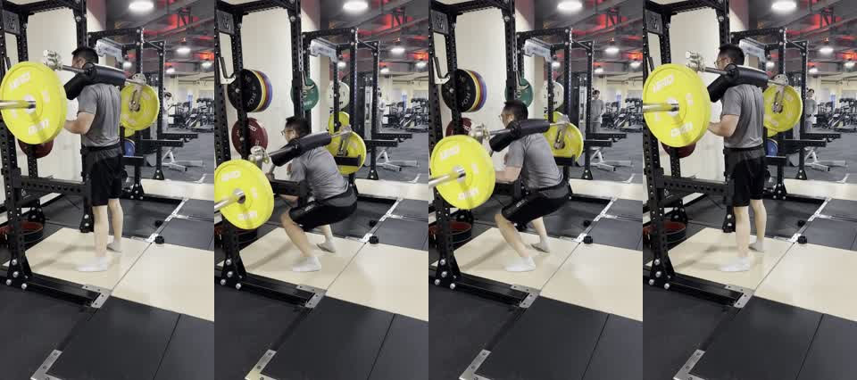

深蹲关键画面

报告应先从自由重量安全出发：脚是否踩稳、杠铃路径是否安静、躯干是否能在底部和起身时守住。
深蹲不是简单要求膝盖不超过脚尖。更重要的是膝盖和脚尖同向、脚掌踩满、髋膝协同、杠铃路径不要把身体压到前方。
下次口令：下蹲时脚掌踩满，起身时胸和髋一起走；不要为了“膝盖不过脚尖”刻意后坐。
这段视频用于测试小鱼教练能否用教练语言复盘深蹲，而不是只套用“膝盖不能超过脚尖”这种过时规则。报告应重点看深度、躯干稳定、杠铃路径和髋膝节奏。
侧后方机位适合判断深度、躯干角度和杠铃相对中足的位置，但不适合高置信度判断左右膝完全对称。报告需要把机位限制说清楚。
| 安全项 | 优先级 | 本次判断 | 处理建议 |
|---|---|---|---|
| 躯干稳定与腰背位置 | 🟡 | 报告必须检查底部和起身阶段是否出现过度前倾、圆背或反弓。 | 如果躯干位置失控，应先降重或缩短行程，把胸髋同步找回来。 |
| 杠铃路径与脚掌压力 | 🟡 | 侧后方机位适合观察杠铃是否大体在中足附近运动。 | 提示脚掌踩满，起身时不要让杠铃明显往前跑。 |
| 膝髋节奏 | 🟡 | 报告应观察起身时是否髋先上升，不能只看膝盖是否超过脚尖。 | 用“胸和髋一起上来”作为下次口令。 |
| 动作 | 代表画面 | 报告应覆盖 | 不应过度判断 |
|---|---|---|---|
| 50kg 杠铃深蹲 | preview_contact_sheet.jpg | 深度、躯干、杠铃路径、髋膝节奏、自由重量稳定性 | 从侧后方机位断言左右膝完全对称 |

报告应先从自由重量安全出发：脚是否踩稳、杠铃路径是否安静、躯干是否能在底部和起身时守住。
深蹲不是简单要求膝盖不超过脚尖。更重要的是膝盖和脚尖同向、脚掌踩满、髋膝协同、杠铃路径不要把身体压到前方。
This sample should produce a squat assessment focused on free-weight stability, depth, trunk position, bar path, and hip-knee timing.
The report must not reduce squat coaching to "knees should not pass toes." It should explain that the side-rear angle is useful for depth, trunk angle, and bar path, while a front-oblique view is better for knee tracking and left-right symmetry.